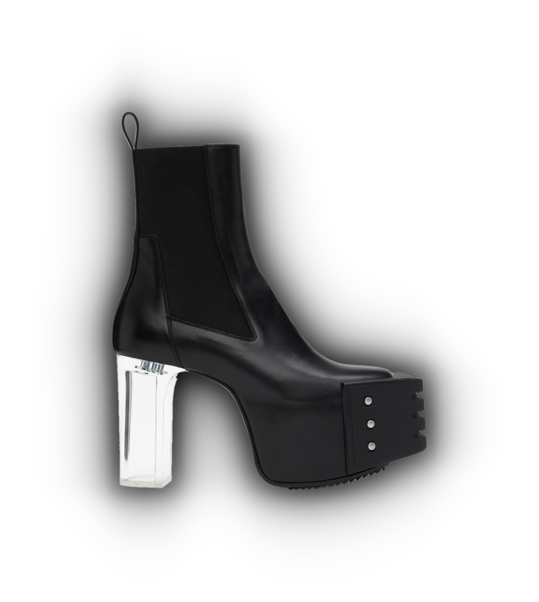
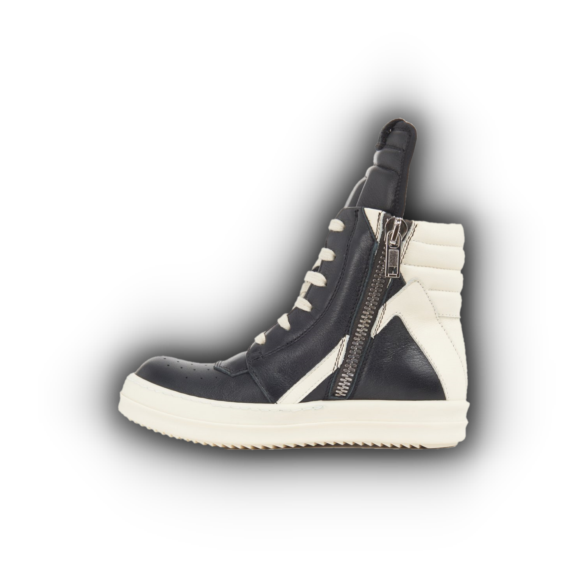
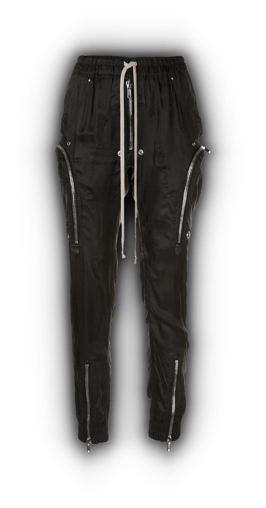
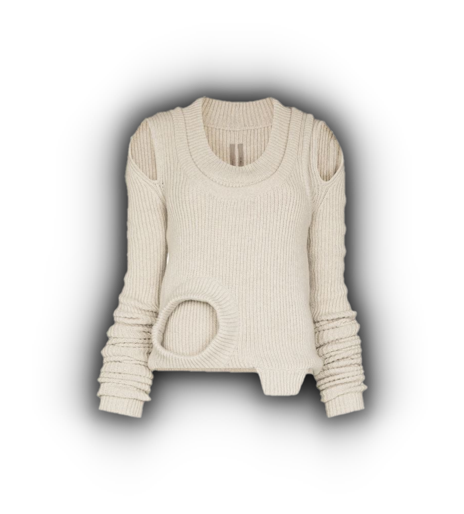

The avant-garde art movement began in the mid 19th century, but it didn't reach the fashion world until the early 1900s. For many decades avant-garde fashion was not heavily explored, but that changed in the last quarter of the 20th century. Designers like, Vivienne Westwood, Yohji Yamamoto, Rick Owens, and many others, started a new revolution in the fashion world. This artistic movement was and still is, focused on pushing the boundaries of what fashion can be. This style is known for its hyper-creative and seemingly bizarre designs. Avant-garde fashion isn't focused on creating or following trends, but rather its in a whole world of its own.

Designer, Rick Owens, launched his brand in 1994, operating out of a store on Hollywood Boulevard, in Los Angeles. It didn't take long for the brand to gain popularity in the fashion community, but for years Rick Owens wasn't able to breakthrough this niche subculture and into the mainstream clothing world. That has all changed in the past decade, and especially in the past few years. The rap community has played a big role in the brands new found fame, thanks to many famous rap artists wearing and promoting the brand in their music. Rick Owen's clothing is known for its dark monochromatic pieces, excessive layering, and unique silhouettes. Rick Owens is heavily influenced by the Gothic aesthetic, and has even been referred to as the lord of darkness for his designs.
   